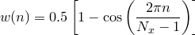
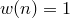

set binorigin <value>
The setting binorigin affects the behaviour of the histogram command by adjusting where it places the boundaries between the bins into which it places data. The histogram command selects a system of bins which, if extended to infinity in both directions, would put a bin boundary at the value specified in the set binorigin command. Thus, if a value of were specified to the set binorigin command, and a bin width of 20 were chosen by the histogram command, bin boundaries might lie at , , , and so on. The specified value may have any physical units, but must be real and finite.